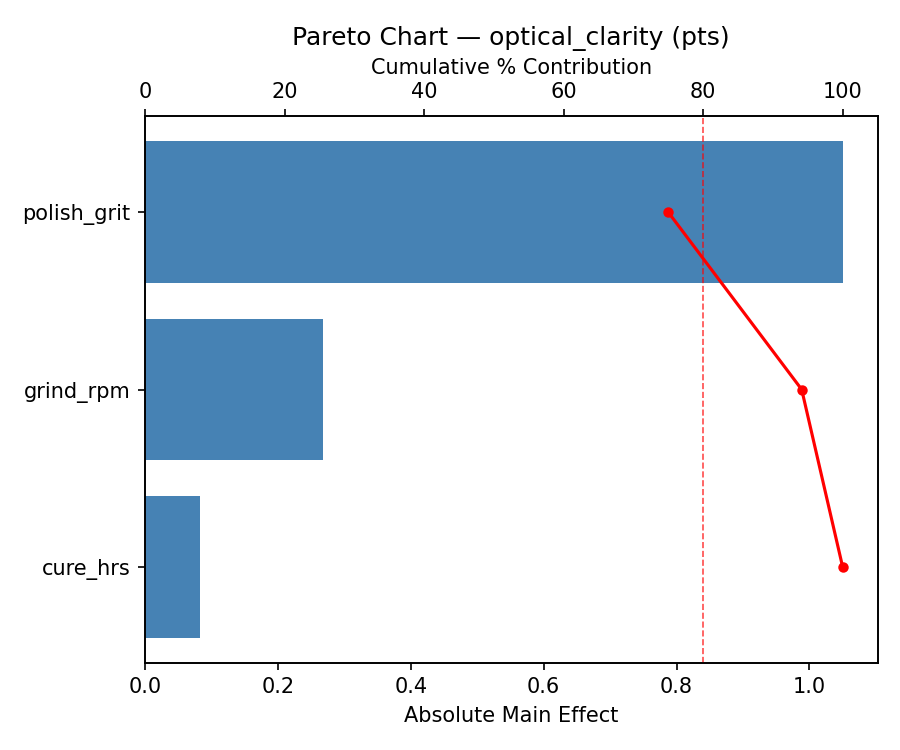
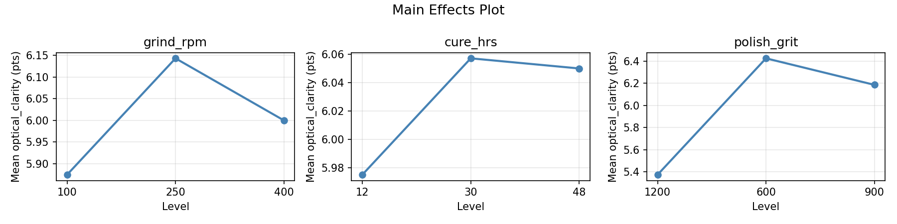
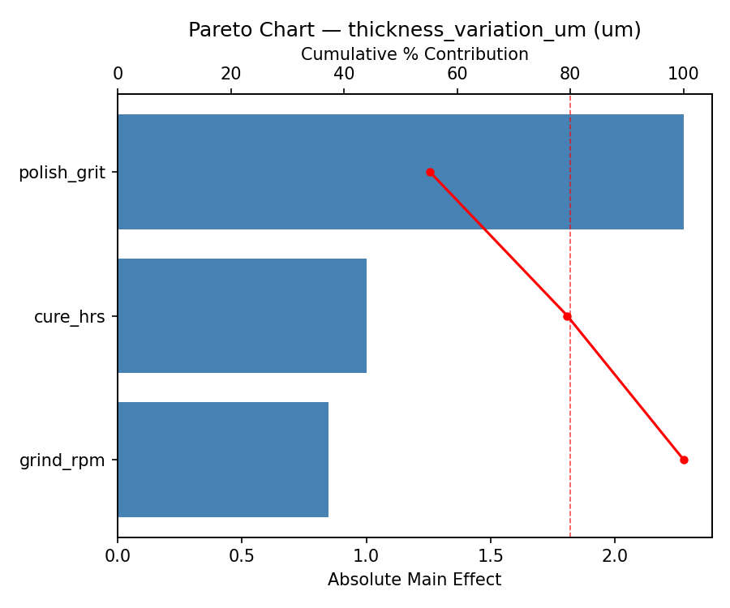
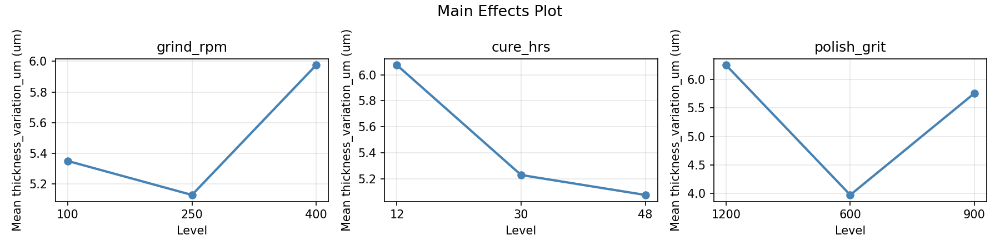
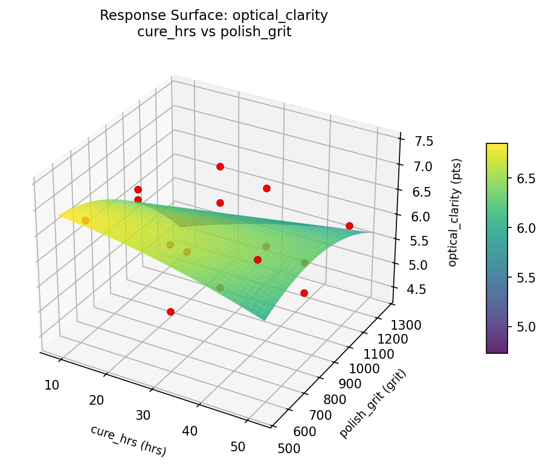
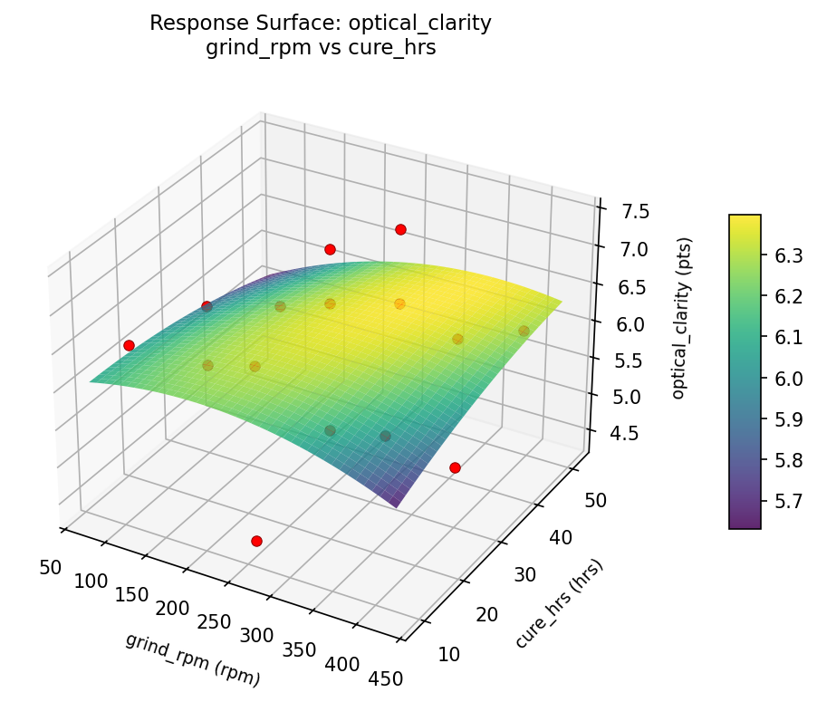
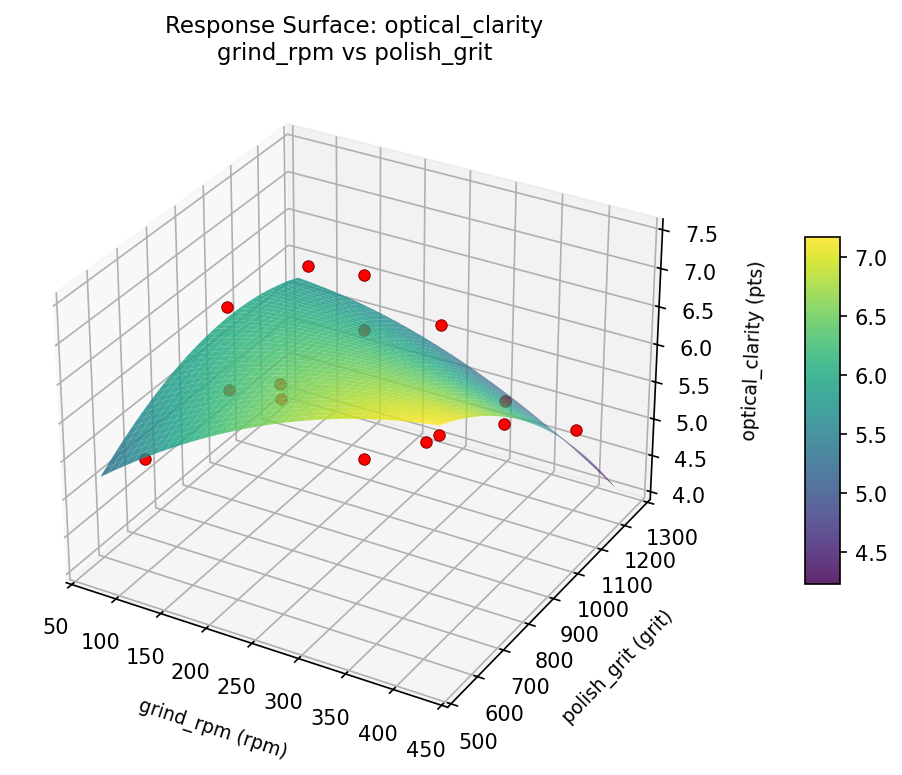
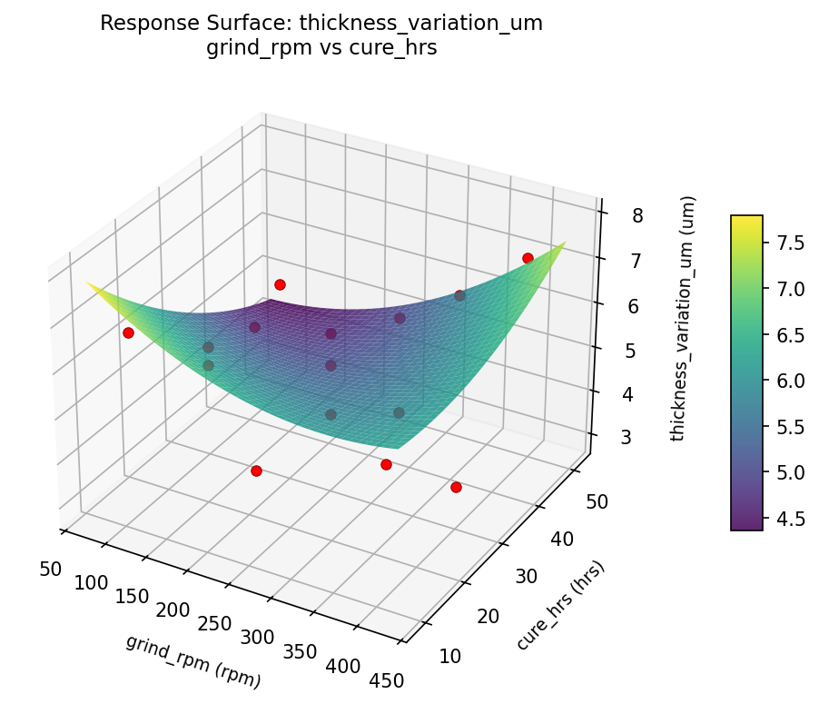
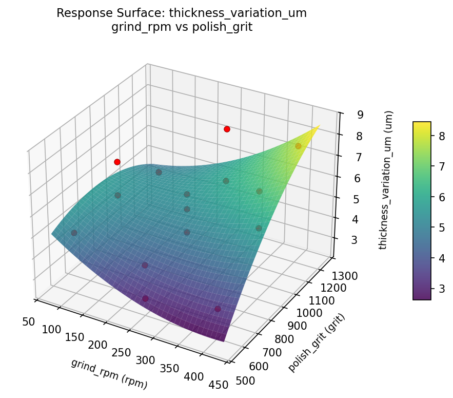

Summary
This experiment investigates rock thin section preparation. Box-Behnken design to maximize optical clarity and minimize thickness variation by tuning grinding speed, epoxy cure time, and final polish grit.
The design varies 3 factors: grind rpm (rpm), ranging from 100 to 400, cure hrs (hrs), ranging from 12 to 48, and polish grit (grit), ranging from 600 to 1200. The goal is to optimize 2 responses: optical clarity (pts) (maximize) and thickness variation um (um) (minimize). Fixed conditions held constant across all runs include rock type = granite, target um = 30.
A Box-Behnken design was chosen because it efficiently fits quadratic models with 3 continuous factors while avoiding extreme corner combinations — requiring only 15 runs instead of the 8 needed for a full factorial at two levels.
Quadratic response surface models were fitted to capture potential curvature and factor interactions. The RSM contour plots below visualize how pairs of factors jointly affect each response.
Key Findings
For optical clarity, the most influential factors were cure hrs (41.7%), polish grit (30.5%), grind rpm (27.8%). The best observed value was 7.4 (at grind rpm = 250, cure hrs = 48, polish grit = 1200).
For thickness variation um, the most influential factors were cure hrs (46.8%), grind rpm (36.2%), polish grit (17.0%). The best observed value was 2.9 (at grind rpm = 100, cure hrs = 12, polish grit = 900).
Recommended Next Steps
- Run confirmation experiments at the predicted optimal settings to validate the model.
- Consider whether any fixed factors should be varied in a future study.
Experimental Setup
Factors
| Factor | Low | High | Unit |
|---|
grind_rpm | 100 | 400 | rpm |
cure_hrs | 12 | 48 | hrs |
polish_grit | 600 | 1200 | grit |
Fixed: rock_type = granite, target_um = 30
Responses
| Response | Direction | Unit |
|---|
optical_clarity | ↑ maximize | pts |
thickness_variation_um | ↓ minimize | um |
Configuration
{
"metadata": {
"name": "Rock Thin Section Preparation",
"description": "Box-Behnken design to maximize optical clarity and minimize thickness variation by tuning grinding speed, epoxy cure time, and final polish grit"
},
"factors": [
{
"name": "grind_rpm",
"levels": [
"100",
"400"
],
"type": "continuous",
"unit": "rpm"
},
{
"name": "cure_hrs",
"levels": [
"12",
"48"
],
"type": "continuous",
"unit": "hrs"
},
{
"name": "polish_grit",
"levels": [
"600",
"1200"
],
"type": "continuous",
"unit": "grit"
}
],
"fixed_factors": {
"rock_type": "granite",
"target_um": "30"
},
"responses": [
{
"name": "optical_clarity",
"optimize": "maximize",
"unit": "pts"
},
{
"name": "thickness_variation_um",
"optimize": "minimize",
"unit": "um"
}
],
"settings": {
"operation": "box_behnken",
"test_script": "use_cases/231_rock_thin_section/sim.sh"
}
}
Experimental Matrix
The Box-Behnken Design produces 15 runs. Each row is one experiment with specific factor settings.
| Run | grind_rpm | cure_hrs | polish_grit |
|---|
| 1 | 250 | 12 | 600 |
| 2 | 250 | 30 | 900 |
| 3 | 400 | 30 | 1200 |
| 4 | 400 | 30 | 600 |
| 5 | 250 | 30 | 900 |
| 6 | 250 | 30 | 900 |
| 7 | 100 | 30 | 1200 |
| 8 | 400 | 12 | 900 |
| 9 | 250 | 12 | 1200 |
| 10 | 400 | 48 | 900 |
| 11 | 100 | 30 | 600 |
| 12 | 250 | 48 | 1200 |
| 13 | 100 | 12 | 900 |
| 14 | 100 | 48 | 900 |
| 15 | 250 | 48 | 600 |
Step-by-Step Workflow
1
Preview the design
$ python doe.py info --config use_cases/231_rock_thin_section/config.json
2
Generate the runner script
$ python doe.py generate --config use_cases/231_rock_thin_section/config.json \
--output use_cases/231_rock_thin_section/results/run.sh --seed 42
3
Execute the experiments
$ bash use_cases/231_rock_thin_section/results/run.sh
4
Analyze results
$ python doe.py analyze --config use_cases/231_rock_thin_section/config.json
5
Get optimization recommendations
$ python doe.py optimize --config use_cases/231_rock_thin_section/config.json
6
Multi-objective optimization
With 2 competing responses, use --multi to find the best compromise via Derringer–Suich desirability.
$ python doe.py optimize --config use_cases/231_rock_thin_section/config.json --multi
7
Generate the HTML report
$ python doe.py report --config use_cases/231_rock_thin_section/config.json \
--output use_cases/231_rock_thin_section/results/report.html
Features Exercised
| Feature | Value |
|---|
| Design type | box_behnken |
| Factor types | continuous (all 3) |
| Arg style | double-dash |
| Responses | 2 (optical_clarity ↑, thickness_variation_um ↓) |
| Total runs | 15 |
Analysis Results
Generated from actual experiment runs using the DOE Helper Tool.
Response: optical_clarity
Top factors: cure_hrs (41.7%), polish_grit (30.5%), grind_rpm (27.8%).
ANOVA
| Source | DF | SS | MS | F | p-value |
|---|
| Source | DF | SS | MS | F | p-value |
| grind_rpm | 2 | 0.7087 | 0.3543 | 6.644 | 0.0199 |
| cure_hrs | 2 | 1.7548 | 0.8774 | 16.451 | 0.0015 |
| polish_grit | 2 | 0.6615 | 0.3308 | 6.202 | 0.0236 |
| Lack | of | Fit | 6 | 6.6617 | 1.1103 |
| Pure | Error | 2 | 0.1067 | | |
| Error | 8 | 6.7683 | 0.0533 | | |
| Total | 14 | 9.8933 | 0.7067 | | |
Pareto Chart

Main Effects Plot

Response: thickness_variation_um
Top factors: cure_hrs (46.8%), grind_rpm (36.2%), polish_grit (17.0%).
ANOVA
| Source | DF | SS | MS | F | p-value |
|---|
| Source | DF | SS | MS | F | p-value |
| grind_rpm | 2 | 4.0927 | 2.0463 | 6.746 | 0.0192 |
| cure_hrs | 2 | 5.9555 | 2.9778 | 9.817 | 0.0070 |
| polish_grit | 2 | 0.8480 | 0.4240 | 1.398 | 0.3015 |
| Lack | of | Fit | 6 | 16.9144 | 2.8191 |
| Pure | Error | 2 | 0.6067 | | |
| Error | 8 | 17.5210 | 0.3033 | | |
| Total | 14 | 28.4173 | 2.0298 | | |
Pareto Chart

Main Effects Plot

Response Surface Plots
3D surfaces fitted with quadratic RSM. Red dots are observed data points.
optical clarity cure hrs vs polish grit

optical clarity grind rpm vs cure hrs

optical clarity grind rpm vs polish grit

thickness variation um cure hrs vs polish grit

thickness variation um grind rpm vs cure hrs

thickness variation um grind rpm vs polish grit

Multi-Objective Optimization
When responses compete, Derringer–Suich desirability finds the best compromise.
Each response is scaled to a 0–1 desirability, then combined via a weighted geometric mean.
Overall Desirability
D = 0.9054
Per-Response Desirability
| Response | Weight | Desirability | Predicted | Dir |
|---|
optical_clarity |
1.5 |
|
7.54 0.9966 7.54 pts |
↑ |
thickness_variation_um |
1.0 |
|
3.80 0.7839 3.80 um |
↓ |
Recommended Settings
| Factor | Value |
|---|
grind_rpm | 130 rpm |
cure_hrs | 48 hrs |
polish_grit | 600 grit |
Source: from RSM model prediction
Trade-off Summary
Sacrifice = how much worse than single-objective best.
| Response | Predicted | Best Observed | Sacrifice |
|---|
thickness_variation_um | 3.80 | 2.90 | +0.90 |
Top 3 Runs by Desirability
| Run | D | Factor Settings |
|---|
| #12 | 0.8380 | grind_rpm=100, cure_hrs=30, polish_grit=600 |
| #14 | 0.7804 | grind_rpm=250, cure_hrs=48, polish_grit=600 |
Model Quality
| Response | R² | Type |
|---|
thickness_variation_um | 0.4878 | linear |
Full Multi-Objective Output
============================================================
MULTI-OBJECTIVE OPTIMIZATION
Method: Derringer-Suich Desirability Function
============================================================
Overall desirability: D = 0.9054
Response Weight Desirability Predicted Direction
---------------------------------------------------------------------
optical_clarity 1.5 0.9966 7.54 pts ↑
thickness_variation_um 1.0 0.7839 3.80 um ↓
Recommended settings:
grind_rpm = 130 rpm
cure_hrs = 48 hrs
polish_grit = 600 grit
(from RSM model prediction)
Trade-off summary:
optical_clarity: 7.54 (best observed: 7.40, sacrifice: -0.14)
thickness_variation_um: 3.80 (best observed: 2.90, sacrifice: +0.90)
Model quality:
optical_clarity: R² = 0.7302 (quadratic)
thickness_variation_um: R² = 0.4878 (linear)
Top 3 observed runs by overall desirability:
1. Run #7 (D=0.8605): grind_rpm=250, cure_hrs=30, polish_grit=900
2. Run #12 (D=0.8380): grind_rpm=100, cure_hrs=30, polish_grit=600
3. Run #14 (D=0.7804): grind_rpm=250, cure_hrs=48, polish_grit=600
Full Analysis Output
=== Main Effects: optical_clarity ===
Factor Effect Std Error % Contribution
--------------------------------------------------------------
cure_hrs 0.7857 0.2171 41.7%
polish_grit 0.5750 0.2171 30.5%
grind_rpm 0.5250 0.2171 27.8%
=== ANOVA Table: optical_clarity ===
Source DF SS MS F p-value
-----------------------------------------------------------------------------
grind_rpm 2 0.7087 0.3543 6.644 0.0199
cure_hrs 2 1.7548 0.8774 16.451 0.0015
polish_grit 2 0.6615 0.3308 6.202 0.0236
Lack of Fit 6 6.6617 1.1103 20.818 0.0465
Pure Error 2 0.1067 0.0533
Error 8 6.7683 0.0533
Total 14 9.8933 0.7067
=== Summary Statistics: optical_clarity ===
grind_rpm:
Level N Mean Std Min Max
------------------------------------------------------------
100 4 6.2000 0.3559 5.9000 6.7000
250 7 6.1429 1.0565 4.4000 7.4000
400 4 5.6750 0.8382 5.0000 6.9000
cure_hrs:
Level N Mean Std Min Max
------------------------------------------------------------
12 4 5.8500 1.2689 4.4000 7.4000
30 7 6.3857 0.5305 5.4000 6.9000
48 4 5.6000 0.7348 5.0000 6.5000
polish_grit:
Level N Mean Std Min Max
------------------------------------------------------------
1200 4 5.7500 1.0661 4.4000 6.7000
600 4 6.3250 1.0563 5.0000 7.4000
900 7 6.0286 0.6422 5.0000 6.7000
=== Main Effects: thickness_variation_um ===
Factor Effect Std Error % Contribution
--------------------------------------------------------------
cure_hrs 1.5286 0.3679 46.8%
grind_rpm 1.1821 0.3679 36.2%
polish_grit 0.5536 0.3679 17.0%
=== ANOVA Table: thickness_variation_um ===
Source DF SS MS F p-value
-----------------------------------------------------------------------------
grind_rpm 2 4.0927 2.0463 6.746 0.0192
cure_hrs 2 5.9555 2.9778 9.817 0.0070
polish_grit 2 0.8480 0.4240 1.398 0.3015
Lack of Fit 6 16.9144 2.8191 9.294 0.1003
Pure Error 2 0.6067 0.3033
Error 8 17.5210 0.3033
Total 14 28.4173 2.0298
=== Summary Statistics: thickness_variation_um ===
grind_rpm:
Level N Mean Std Min Max
------------------------------------------------------------
100 4 5.1000 1.5513 3.5000 7.2000
250 7 5.9571 1.3951 4.3000 7.7000
400 4 4.7750 1.3451 2.9000 6.1000
cure_hrs:
Level N Mean Std Min Max
------------------------------------------------------------
12 4 5.3750 1.5108 4.3000 7.6000
30 7 4.8714 1.4174 2.9000 7.2000
48 4 6.4000 1.0893 5.1000 7.7000
polish_grit:
Level N Mean Std Min Max
------------------------------------------------------------
1200 4 5.7250 1.8081 3.5000 7.6000
600 4 5.5250 2.3042 2.9000 7.7000
900 7 5.1714 0.5529 4.5000 6.1000
Optimization Recommendations
=== Optimization: optical_clarity ===
Direction: maximize
Best observed run: #12
grind_rpm = 250
cure_hrs = 48
polish_grit = 1200
Value: 7.4
RSM Model (linear, R² = 0.0743, Adj R² = -0.1782):
Coefficients:
intercept +6.0333
grind_rpm -0.2750
cure_hrs +0.0250
polish_grit -0.1250
RSM Model (quadratic, R² = 0.5889, Adj R² = -0.1509):
Coefficients:
intercept +6.2667
grind_rpm -0.2750
cure_hrs +0.0250
polish_grit -0.1250
grind_rpm*cure_hrs +0.6250
grind_rpm*polish_grit +0.1750
cure_hrs*polish_grit +0.3250
grind_rpm^2 -0.6458
cure_hrs^2 -0.2958
polish_grit^2 +0.5042
Curvature analysis:
grind_rpm coef=-0.6458 concave (has a maximum)
polish_grit coef=+0.5042 convex (has a minimum)
cure_hrs coef=-0.2958 concave (has a maximum)
Notable interactions:
grind_rpm*cure_hrs coef=+0.6250 (synergistic)
cure_hrs*polish_grit coef=+0.3250 (synergistic)
Predicted optimum (from quadratic model, at observed points):
grind_rpm = 250
cure_hrs = 12
polish_grit = 600
Predicted value: 6.9000
Surface optimum (via L-BFGS-B, quadratic model):
grind_rpm = 125.161
cure_hrs = 12
polish_grit = 600
Predicted value: 7.3473
Model quality: Moderate fit — use predictions directionally, not precisely.
Factor importance:
1. grind_rpm (effect: 0.9, contribution: 48.2%)
2. polish_grit (effect: 0.7, contribution: 35.8%)
3. cure_hrs (effect: 0.3, contribution: 16.0%)
=== Optimization: thickness_variation_um ===
Direction: minimize
Best observed run: #7
grind_rpm = 100
cure_hrs = 12
polish_grit = 900
Value: 2.9
RSM Model (linear, R² = 0.1361, Adj R² = -0.0995):
Coefficients:
intercept +5.4133
grind_rpm +0.6750
cure_hrs +0.1625
polish_grit +0.0375
RSM Model (quadratic, R² = 0.7727, Adj R² = 0.3636):
Coefficients:
intercept +4.6667
grind_rpm +0.6750
cure_hrs +0.1625
polish_grit +0.0375
grind_rpm*cure_hrs -1.5750
grind_rpm*polish_grit -0.5250
cure_hrs*polish_grit -0.9500
grind_rpm^2 +0.6667
cure_hrs^2 +0.7417
polish_grit^2 -0.0083
Curvature analysis:
cure_hrs coef=+0.7417 convex (has a minimum)
grind_rpm coef=+0.6667 convex (has a minimum)
polish_grit coef=-0.0083 negligible curvature
Notable interactions:
grind_rpm*cure_hrs coef=-1.5750 (antagonistic)
cure_hrs*polish_grit coef=-0.9500 (antagonistic)
grind_rpm*polish_grit coef=-0.5250 (antagonistic)
Predicted optimum (from quadratic model, at observed points):
grind_rpm = 400
cure_hrs = 12
polish_grit = 900
Predicted value: 8.1625
Surface optimum (via L-BFGS-B, quadratic model):
grind_rpm = 100
cure_hrs = 12
polish_grit = 600
Predicted value: 2.1417
Model quality: Good fit — general trends are captured, some noise remains.
Factor importance:
1. grind_rpm (effect: 1.3, contribution: 57.4%)
2. cure_hrs (effect: 0.9, contribution: 36.4%)
3. polish_grit (effect: 0.1, contribution: 6.2%)